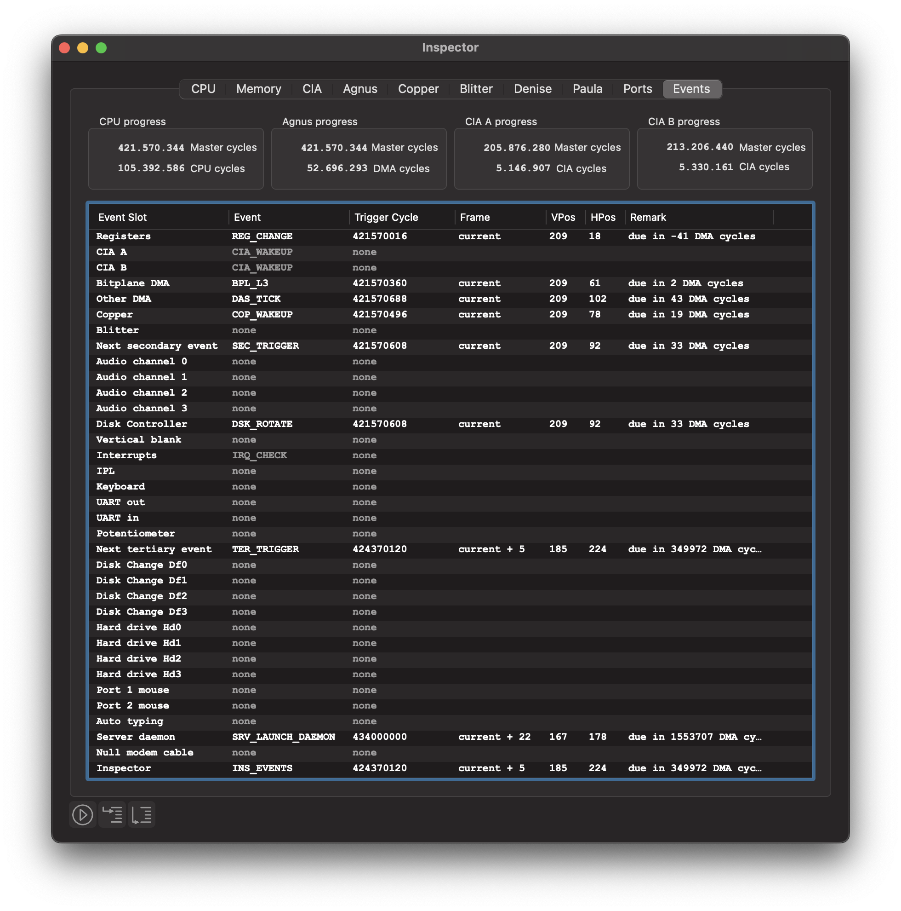
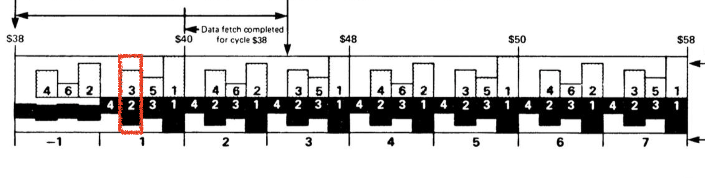

The Event Scheduler¶
vAmiga is an event-driven emulator. If an action has to be performed in a certain bus cycle, the action is scheduled via the event handler API and executed when the trigger cycle is reached. The scheduler can be viewed as a large to-do list that is processed sequentially in Agnus::executeUntil. In the document about the Run Loop you have learned that this function is called in Agnus::execute which emulates Agnus for one bus cycle.
Event slots¶
Scheduled events are stored in so-called event slots. Each slot is bound to a specific component and is either empty or contains a single event. For instance, there is a slot for Copper events, a slot for Blitter events, a slot for UART events, and so on. From a theoretical point of view, each event slot represents a state machine that runs in parallel with all others. It is important to remember that the state machines interact with each other in various ways (e.g., by blocking the DMA bus). Therefore, the slot ordering is important: if two events are triggered in the same cycle, the slot with the smaller number is served first.
Enough theory for now. Let’s open the Events tab of the Inspector panel and examine what an event typically looks like. When the emulator is running, you’ll see something similar to this:

The first seven slots comprise the so-called primary event table. The basic idea of the primary table is to group together all event slots with high traffic. Let’s look at the contents of these slots at the time the screenshot was taken:
Registers This event slot is used to emulate the access delays of the custom registers. It is either empty if no register change is pending, or it contains a
REG_CHANGEevent if one or more registers will change in the near future. Note that in our example, the trigger cycle of this slot is overdue. For speed reasons, the event scheduler sometimes skips updating the trigger cycle. A trigger cycle lying in the past has the same meaning as a trigger cycle that matches the value of the Agnus clock: It is due immediately.CIA A and CIA B
Each CIA is controlled by its own event slot. As you can see in the screenshot, the slots for both CIAs contain a
CIA_WAKEUPevent, which means that both CIAs are inactive at the moment. The event slots are grayed out, which means that the slots are disabled. When either CIA gets something to do, the corresponding slot is enabled by updating the trigger cycle.Bitplane DMA
This slot manages all bitplane DMA accesses. In the example shown above, a
BPL_L3event is due at DMA cycle 61 ($3D) in the current scanline. If you are familiar with the DMA cycle diagram found in the Hardware Reference Manuel, you can easily understand what the emulator will be doing when the event triggers. It will perform the bitplane DMA fetch cycle surrounded by a red box:
Other DMA
This slot is used to manage disk DMA, audio DMA and sprite DMA, as well as to perform some special actions that must be carried out at specific positions in the processed scanline. In the example shown above, the slot contains a scheduled
DAS_TICKevent. When this event is triggered, the 24-bit counter of CIA B is incremented by one. This counter is used by the Amiga to keep track of the currently processed scanline.Copper and Blitter
These two slots manage the Copper and Blitter, respectively. The Copper slot has a scheduled wake-up event which is used to implement the
WAITinstruction. Nothing is scheduled in the Blitter slot, which means that the Blitter is currently inactive.Next secondary event
This is the last slot in the primary slot table and utilized to speed up emulation. It indicates whether the event scheduler needs to proceed with checking the events in the other slots. To understand how this works, let’s return to theory for a moment.
The event slots are divided into primary, secondary and tertiary slots. We have already made ourselves familiar with the primary slots, which manage all frequently occurring events. The secondary slots manage events that occur less frequently, such as interrupts or the events that control Paula’s four audio state machines. Events that occur very occasionally are scheduled in the tertiary slots, such as the insertion of a floppy disk. Accordingly, we call an event primary, secondary, or tertiary if it is scheduled in a primary, secondary, or tertiary slot, respectively.
To speed up, the event scheduler checks only the primary event slots by default. In order for the event handler to also check the secondary slots, a SEC_TRIGGER event must be scheduled in the SEC_SLOT. Since this slot belongs to the primary event table, too, it is always checked, just like the other slots in the primary event table. Triggering this event acts like a wake-up call requesting the event handler to check for secondary events as well. Thus, if an event is scheduled in a secondary slot, it must be ensured that SEC_SLOT contains a SEC_TRIGGER event with a trigger cycle equal to the smallest trigger cycle of all secondary events.
The same applies to tertiary events. When such an event is scheduled, the event scheduler automatically schedules a TER_TRIGGER wake-up event in TER_SLOT, which is the last event slot in the secondary slot table.
As you can see in the screenshot above, two tertiary slots contain a scheduled event. The first event is scheduled in the Server Daemon slot. It is used to monitor external socket connections. Such a connection is used, for example, to emulate a null modem cable connecting two vAmigas. The last slot is the Inspector slot and contains an event of type INS_EVENTS. When this event is triggered, an inspection of the event table is carried out. This means that all entries of the event table are recorded and passed to the GUI. In fact, it’s these recorded values that we see in the screenshot above. This also clarifies why the INS_EVENT event is always listed as “due immediately” in the inspector.
Overall, the introduction of an event hierarchy significantly improves emulation speed, as it prevents the event scheduler from having to traverse the entire event table when looking for due events.
Scheduling events¶
Internally, events are scheduled by calling an appropriate function from the event scheduling API. Among those are the following two variants of scheduleAbs which are implemented as follows:
template<EventSlot s> void scheduleAbs(Cycle cycle, EventID id)
{
this->trigger[s] = cycle;
this->id[s] = id;
if (cycle < nextTrigger) nextTrigger = cycle;
if constexpr (isTertiarySlot(s)) {
if (cycle < trigger[SLOT_TER]) trigger[SLOT_TER] = cycle;
if (cycle < trigger[SLOT_SEC]) trigger[SLOT_SEC] = cycle;
}
if constexpr (isSecondarySlot(s)) {
if (cycle < trigger[SLOT_SEC]) trigger[SLOT_SEC] = cycle;
}
}
template<EventSlot s> void scheduleAbs(Cycle cycle, EventID id, i64 data)
{
scheduleAbs<s>(cycle, id);
this->data[s] = data;
}
The first variant requires three arguments. In addition to the template argument, which specifies the event slot in which the event is to be scheduled, it expects a trigger cycle and an event ID. The second variant has an additional data argument. For example, most events dealing with floppy drives store the drive number in the event’s data field.
Other scheduling functions are scheduleImm, scheduleInc, or scheduleRel. All these functions differ in the way the trigger cycle is set:
Absolute (Abs)
The trigger cycle is specified in the form of a specific master cycle.
Immediate (Imm)
The trigger cycle is the next DMA cycle.
Incremental (Inc)
The trigger cycle is specified relative to the old trigger cycle.
Relative (Rel)
The trigger cycle is specified relative to the current Agnus clock cycle.
Events can also be rescheduled, cancelled or disabled. Rescheduling means that the event ID in the selected event slot remains unchanged. Canceling is done by calling the following function:
template<EventSlot s> void cancel()
{
id[s] = (EventID)0;
data[s] = 0;
trigger[s] = NEVER;
}
The crucial statement here is the last assignment. It sets the trigger cycle to NEVER, which is defined as a simple preprocessor constant:
// Time stamp used for messages that never trigger
#define NEVER INT64_MAX
This means that a canceled event keeps being scheduled, but with a trigger cycle so high that it will never trigger.
When we say that an event slot is disabled, we simply mean that the trigger cycle is set to NEVER, but the ID and data are preserved. This is sometimes done for speed reasons, e.g. when the IDs of two consecutive events do not change.
Note that the event scheduler treats all cycle values as master cycles. If a trigger value is specified in a different unit, it must be converted to master cycles first. Several conversion macros are defined for this purpose:
#define CPU_CYCLES(cycles) ((Cycle)(cycles) << 2)
#define CIA_CYCLES(cycles) ((Cycle)(cycles) * 40)
#define DMA_CYCLES(cycles) ((Cycle)(cycles) << 3)
The macros convert a value given in CPU cycles, CIA cycles or DMA cycles to the corresponding value on the master cycle scale. Reconversion is also possible by applying one of the following macros:
#define AS_CPU_CYCLES(cycles) ((Cycle)(cycles) >> 2)
#define AS_CIA_CYCLES(cycles) ((Cycle)(cycles) / 40)
#define AS_DMA_CYCLES(cycles) ((Cycle)(cycles) >> 3)
All event IDs are defined in a large enum called EventID.
enum_i8(EventID)
{
EVENT_NONE = 0,
//
// Events in the primary event table
//
// REG slot
REG_CHANGE = 1,
REG_EVENT_COUNT,
// CIA slots
CIA_EXECUTE = 1,
CIA_WAKEUP,
CIA_EVENT_COUNT,
...
Note that event IDs are reused across the event slots. For example, the REG_CHANGE and CIA_EXECUTE events share the same ID.
Congratulations. If you have worked through the documentation up to this point, you already have a good understanding of the basic software structure and inner workings of vAmiga.